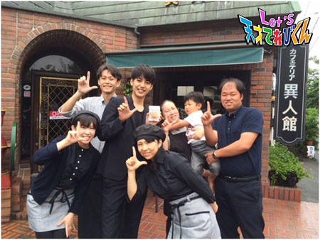
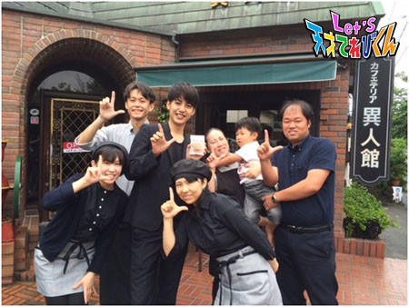
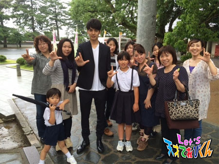
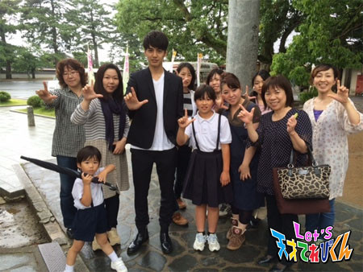
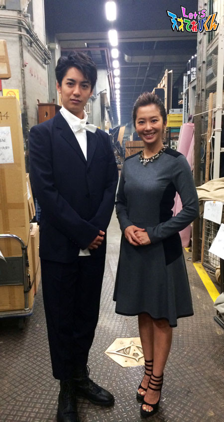
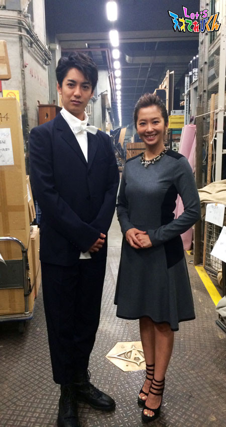
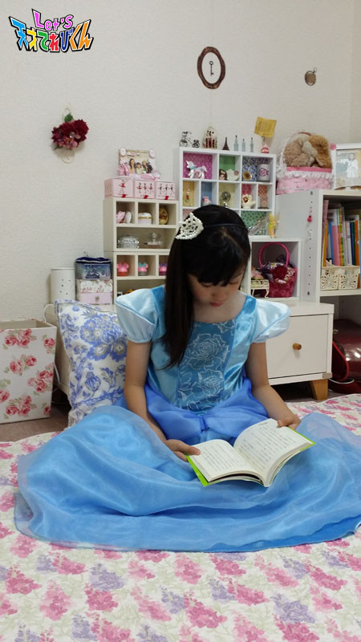

<<2014年6月 | トップページ | 2014年8月>>
2014年7月
夏休みの自由研究は、これで決まり！［笹原尚季］
笹原です。
毎日、暑いですね～～
今回のテーマは、
『夏休みの自由研究は、これで決まり！』
僕がやってみたいなあと思った自由研究は、ありさんはどんな物が好きかです。
ありさんがいる所に、あめや和菓子や砂糖、クッキーなどなど、いろいろな物を置きます。
おせんべいなど、しょっぱい物でもいいと思います。
自分の好きなお菓子を選んであげてもOK♪
そして、ありさんが集まっているところを観察して、人気の順番をつけます。
ありさんが行列になっているとかわいいから、じゃまをしないように観察します。
ちなみに、僕がいちばん好きなのは、かき氷です。
みんなも試してみてください☆
投稿者:笹原尚季 | 投稿時間:18時54分 | カテゴリ：てれび戦士 | 固定リンク
夏休みの自由研究は、これで決まり！［桐畑カレン］
こんにちは。カレンです(*^^*)
うれしい夏休みがやってきましたねっ。
みんなは、いろいろ予定をたてましたか？
私は、1 日の予定をたてました。
計画はバッチリだけど、予定通りに進むかな～?
それにしても毎日暑い！！です。
暑い日に、お外で食べるアイスはおいしい～。
でも早く食べないと、とけてきます。
大変です(￣□￣;)！！
夏休みの自由研究、私は去年から始まりました。
おやつ大好き食いしん坊な私は、
「日本各県の人気の食べ物のお土産」を調べました。
お土産は「その土地で産まれたもの」という意味を持っています。
（どちゃもんもみたいですね！）
アンテナショップのような所に行ってみたり、お土産にもらったものだったり、
おいしいものを食べながら研究ができて、一石二鳥でした(*^^*)
でも日本地図を書くのが、とってもとってもむずかしかったから、裏わざを使いました(-.-)
私が住んでいる県は、もう少しくわしく調べましたよ(^.^)
今年は「お星さま」について、調べるつもりです。
理科の授業でお勉強したし、宝石みたいにキラキラしているお星さまが好きだからです。
お友達とプラネタリウムに行って、いっしょに研究してきます。
でも、何を研究するかは、まだ決まってないです。
プラネタリウムを見てから決めます(^-^)/
よし、がんばるぞ！！
投稿者:桐畑カレン | 投稿時間:18時45分 | カテゴリ：てれび戦士 | 固定リンク
夏休みの自由研究は、これで決まり！［辻村晃佑］
こんにちは、辻村晃佑です。
夏休みになりましたねーー ( ´ ▽ ` )
夏といえば、花火やお祭りなど、いろいろ楽しいことがありますが、大変な宿題もあります。
夏休みの宿題の中で、いちばん大変なのが自由研究だと思います。
そこで、今回は役に立つ自由研究を1つ紹介します。
「貝がらの壁飾り」
（材料）
・紙皿
・海で拾った貝がら
・その他の飾り（公園で拾った枝・スパンコール・ビーズなど、なんでも）
・ひも（麻ひも）
・紙粘土
・ペーパーパンチ２つ穴用
・接着剤
・紙粘土用ニス（スプレー）
（作り方）
①紙皿にひもを通す穴を２つあけます。
ペーパーパンチを使うと簡単です。
② 紙皿に紙粘土をはっていきます。
とれない様にしっかりと！
はじっこもかくれるようにはるときれいにできます。
③ 紙皿に貝がらや飾りをはっていきます。
④最後に紙粘土用ニスをぬって、穴にひもを通してできあがり。
みなさんも簡単なので作ってみてくださいね(・∀・)

Let's
投稿者:辻村晃佑 | 投稿時間:18時45分 | カテゴリ：てれび戦士 | 固定リンク
21世紀調査報告書その2［大野拓朗課長］
茶の間戦士諸君、待たせたな。
君たちのために、またお手紙を書いてるぞ！
まあまあ、そう寂しがるんじゃない。
私たちの上には、おっきな空が広がってる。
私たちはみんな、そのおっきな空でつながってるんだから。
(…………あ、私は22世紀にいるから同じ空の下にはいないんだ。。)
おおっと！心の声がもれてしまった！！
あ、いやいやいや、これならどうだ！
空ではつながっていなくとも、君たちが私のことを思い出してくれたとき、
そのとき私は、君たちの「心の中」にいるんだ。
どうだ？そう思うと心強いだろう！！
夏休みの宿題も頑張れちゃうぞ！！
ところで、21世紀にはどんな夏休みの宿題があるんだろう。
なにか面白い宿題とかあるのかな？
私が小学生だったのは21世紀の終わり頃だが、
読書感想文や、ハミガキカレンダー・自由研究などがあった。
そうそう、自由研究好きだったなー
私は昔から物を作ったりすることが得意だったから、毎年工作をしていた。
木でおっきなイスなんかも作ったもんだ。
学校まで持って行くのが大変だったよ(笑)
君たちは、何をする？私にテレパシーで教えてくれ！
さて、21世紀の調査報告だ。
実は2014年にいたとき、Let'sの輪を広げるために山口県に出張をしたんだ。
そのときの調査写真をみんなにも見せてあげよう。
もちろんITAISENの課長であることは隠して、
俳優の大野拓朗という仮の姿で行動していたのだが、
たくさんの人に声を掛けていただいた。
お忍びで行動していても、やはり気付いてもらえるというのは嬉しいものだな。
 
 

さらに、NHK山口の皆さんにも会ってきたぞ！

異次元獣に気を付けるよう、そしてどちゃもんの情報が入ったら、
すぐに報告してもらうようお願いしてきた。
どうだ！みんな素敵な笑顔だろう。
Let'sには、こんな力もあるんだな。
さあ、茶の間戦士のみんなも力を貸してくれ。
Let'sの輪を広げて行こうじゃないか！
行くぞ！！Let's！！
また会おう！！
投稿者:大野拓朗課長 | 投稿時間:18時45分 | カテゴリ：未来人 | 固定リンク
私だけが知っている法則［杉本瑛］
どうも、杉本瑛です。
横浜にファッションショーを見に行きました。
ファッションショーには、浴衣を着て行きました。
そこで発見した♪
私だけが知っている法則♪
それは、和服を着るとたくさんの方に「かわいいね」といってもらえることです。
和服を着るとおしとやかな気持ちになります。
和服って暑いときは、扇子であおぐと体温調節しやすいし、動きやすいから好きです。
ただ足を踏まれるとカバーされていないところが多いので、痛いです。
皆さんは、どんな法則を知っていますか？
投稿者:杉本瑛 | 投稿時間:18時45分 | カテゴリ：てれび戦士 | 固定リンク
私だけが知っている法則［小西憧弥］
こんにちは！憧弥です(^o^)/
最近、なわとびとキャッチボールをがんばってます。
1ヶ月前は、二重とびが連続でとべなかったけど、
お姉ちゃんに教えてもらったりして、連続でできるようになりました(^o^)/
昨日までの最高記録は31回。
もっともっと記録をのばすぞー！
キャッチボールは、速い球をねらったところに投げれるように練習中！（≧∇≦）
今回は、「わたしだけが知っている法則」
難しい… …
考えて、考えて、2つ思いつきました。
★起きる時間の法則
学校のある日は、お母さんが起こしにきても、なかなか起きれなくて、
最後には怒られてフラフラ起きるんだけど、学校が休みの日は、
なぜか、お母さんに起こされなくても早起きできちゃうっていう法則！
わかる～って人、いっぱいいそう。
早起きして、テレビのアニメを見るのが楽しみ！
もう1つは、
★春巻きの法則
憧弥は、野菜いためが苦手なんだけど、
春巻きの皮で包んで、あげてもらうと、何個でも食べれるっていう法則！
春巻きが大好きだから、中は野菜いためでも平気(^_^)v
野菜いためが苦手な人は、ためしてみて。
次のブログの順番のときは、二重とび連続で何回とべてるでしょう…(^O^)
投稿者:小西憧弥 | 投稿時間:18時54分 | カテゴリ：てれび戦士 | 固定リンク
私だけが知っている法則［飯島緋梨］
飯島緋梨です。
もうすぐ、夏休み！
何して遊ぼうかなー！
今から楽しみです(^_^)
ところでみなさんは、自分だけが知っている法則はありますか？
私が知っている法則は、
「満月のときは、かならず虫が出るということ～」
この前の満月の日も、3匹も家に虫が出ました！
でも3匹のうちの1匹の足の長い虫は、逃げられてしまった！
逃げられたまま、寝るのはこわいな(>_<)
そして、もう1つ！
私のお母さんは、緋梨には、
「夕飯の前なのに、お菓子を食べ過ぎちゃだめ！」というのに
お母さんは、
「夕飯も食べられるから大丈夫！」といって
お菓子を食べ過ぎなぐらい、パクパク食べています！
ちなみに緋梨の好きな絶品おやつは、
スライスしたフランスパンにシーザードレッシングをぬって、
トースターでカリカリに焼くと、
簡単で美味しいおやつの出来上がり！
皆さんもぜひ試してみてね(^_^)
投稿者:飯島緋梨 | 投稿時間:18時45分 | カテゴリ：てれび戦士 | 固定リンク
私だけが知っている法則［林武尊］
こんにちは！林武尊です。
学校でプールが始まって、気がついたらずいぶん日焼けをしてしまいました((((；゜Д゜)))))))
水泳は習っていないけど、プールは大好き！
今は初段なので、今年はがんばって2段になりたいと思います！
ぼくだけの法則は…
歯医者さんに行くと、絶対にねてしまうことです(ー ー;)
歯を治りょうするときは、歯医者さんのライトがまぶしくて、
お母さんからタオルをかりて顔にかけます。
10分から20分くらいしか、かからないんですけど、気がついたら必ずねています。
なんか、気持ちいいんです。
あっ、ちなみにぼくのお母さんは、一緒にアニメ映画を観に行くと、
必ず始まって10分くらいでねています。
なんで？
投稿者:林武尊 | 投稿時間:18時45分 | カテゴリ：てれび戦士 | 固定リンク
21世紀調査報告書その1［大野拓朗課長］
茶の間戦士諸君、久しぶりだな。
私が未来に帰ってしまったことで、君たちが寂しそうにしていると思うと、実に胸が苦しい。
え？
なに？
寂しくない？
……………。
…………………。 ………ゴホン。
えー、寂しがっている場合ではない。ＩＴＡＩＳＥＮの課長は忙しいのだ。
22世紀の地球に状況に関する調査は急務だが、
21世紀についての調査も合わせて進めなければならない。
そこで、俳優として活動することで正体を隠し、21世紀の調査を行うことにした。
どうしてそんなことができるかって？ 特殊な交渉術を用いたのだ。
幸運なことに日本で大人気の「大河ドラマ」なるものに出演させていただけることとなった。
お題は「花燃ゆ」。「どちゃもん」と同じイントネーションで読むのが正しい発音らしい。
今回の大河ドラマは、日本の幕末から明治という時代の話らしい。
22世紀から、21世紀、そしてさらに19世紀へと過去に遡(さかのぼ)るんだ。
記者会見というものも体験させていただいたが、
てれび戦士諸君の記者発表に乗り込んだときとはワケが違う。
そうそうたる共演者の方々に囲まれ、さすがの私も武者震いを隠せなかった。

 

私が演じるのは、
吉田松陰先生が教える、
松下村塾(しょうかそんじゅく)という私塾の塾生「野村靖(のむらやすし)」。
1842年に生まれ、68歳まで生きた偉人の一人だ。
小さい頃は「野村和作(のむらわさく)」という名前だったらしい。
子どもの頃と大人になってからと、名前が変わるというのは実に不思議だ。
さらに野村靖について調査したところ、生涯を通して吉田松陰先生に忠実で、
兄「入江九一」を始め家族を大変愛し、大切にしていて、幕末を生き残る。
そして明治の世では内閣に入り、第2次伊藤博文内閣で内務大臣、
さらに神奈川県令(今で言う神奈川県知事)になって、日本のために働いたということだ。
野村靖34歳のときには、
吉田松陰先生の遺書である「留魂録(りゅうこんろく)」を受け取るという大役もあるから、
10代から30代以降まで、幅広い年齢で演じることになると思われる。
実に楽しみだ！
今回、大河のチーフプロデューサー土屋さんに、
野村靖は貧乏だったからガリガリに痩せた方が良いのか、
それともかっこよく身体を鍛えておいた方が良いのかを相談したところ、
ベストオブ大野課長で臨んでくれという指令が下った。
松下村塾のメンバーを青春イケメン祭りにするらしい。
ということで、ただいま絶賛筋トレ中だ！
寂しさも紛れていいぞー！このままだと異次元獣も私の力だけで倒せてしまうかもな！
ふっふっふ、はっはっはっはっはーーー！！
22世紀には宇宙人や異次元獣などはいるが、この大河の時代には存在するのか。
はたまた別の未知なる生物が存在するのか。
実際にこの時代を生きることで、有益な情報を得ることができたらなと思う。
茶の間戦士の諸君も、一緒に「花燃ゆ」を見ながら、この時代のことを調査してくれたまえ。
それでは、また会う日まで。
Let's 調査だ！！！
投稿者:大野拓朗課長 | 投稿時間:18時45分 | カテゴリ：未来人 | 固定リンク
私だけが知っている法則［桐畑カレン］
こんにちは。カレンです(*^^*)
今、「鶴を折る」ブームがきています。
だんだん上手に折れるようになってきて、ミニ鶴さんも折れるようになりました！
今回のテーマは、私だけが知っている法則です。
まずは、私だけ？な法則から
☆「春秋冬は大豆で、夏はアーモンド！」
「カレンちゃん、ちょっとやせた？」
夏になると、いわれ始めます。
いつもは、ほっぺたがプクプクしてて、おまめちゃん（大豆っぽい）といわれるんだけど、
夏は日焼けして、シュッとスリムに見えるそうです。
それって、アーモンドみたい？
だから、私は夏だけ大豆からアーモンドに変身？変豆？します(^^)/
次に、みんなも？な法則。
☆「楽しみなことが待っていると、宿題がさっと終わる！」
この前、お友達と七夕祭りに行く約束をしました。
学校から帰って、すぐおやつを食べないでそろばんに行って、
（おやつを食べないなんて大事件です！でも、お祭りで食べられるから、がまんできました！）
それから集中して、ちゃちゃっとていねいに宿題を終わらせました。
楽しみなことがあると、パワーがでてきます(^O^)
いつもは、の～んびりていねいにしている宿題もあっという間に終わります。
みんなも、そうじゃないですか？
お友達みんなで行った七夕祭りは、とっても楽しかったです(*^^*)
投稿者:桐畑カレン | 投稿時間:18時45分 | カテゴリ：てれび戦士 | 固定リンク
私だけが知っている法則［原田明莉］
★Hello★
原田明莉でーーーす！
梅雨も明けて、外で友達と遊べる日が多くなってきましたー！
そこで、今日は、
★私だけが知っている この世の法則★
を教えたいとおもいます。
例えば・・・
★学校の先生を「ママ」と呼んでしまう子が、必ずクラスにいる！
とかー・・・
そんなこと！
そして、もー1つ！！！
★麦茶の味が、人の家によってちがうーーー！！！
ということです！
よくありませんか！？
友達のお家に遊びに行ったときに、麦茶をいただくと
『家と味がちがうーーー！！！』
って思うんです！
そういえば！
と思って考えてみると、
みなさんもよくありませんか？
いろいろな麦茶の味を体験できて
ほんとーに、おもしろいです！！！
お家で、いろいろな麦茶の味を体験したいとおもいます！！
★Let's taste★
投稿者:原田明莉 | 投稿時間:18時54分 | カテゴリ：てれび戦士 | 固定リンク
私だけが知っている法則［小澤竜心］
こんにちは！竜心です。
ぼくは、毎月、歌舞伎を観ます。
６月は、歌舞伎鑑賞教室（ぢいさんばあさん）と、歌舞伎座を観にいきました。
歌舞伎座の立回りが、すごかったです。
とんぼ返りがかっこよくて、たくさん拍手しました。
鑑賞教室は、解説もお話もわかりやすくて、面白かったです。
おじいさんおばあさんになっても、ずーっと好きでいるのが、すごいと思いました。
それでは、『ぼくだけの法則』を教えちゃいます。
【 歌舞伎を観ると、漢字も好きになる！ 】
筋書きやチラシには、むずかしい漢字が出てきます。
読めない漢字があると、調べます。
調べると、いろいろわかって面白い！
だから、漢字もどんどん好きになりました。
ついでに、ぼくの好きな漢字は、
【 鑑 】です。
歌舞伎の演目に、たくさん出てきます。
みなさんも、さがしてみてねー＼(^o^)／
投稿者:小澤竜心 | 投稿時間:18時45分 | カテゴリ：てれび戦士 | 固定リンク
私だけが知っている法則［齋藤茉日］
皆さん！
こんばんは^o^
茉日です～
夏になって、日に日に暑くなってきましたね(-｡-;
で、この間、部屋に！強敵！！
「ゴ・キ・ブ・リ・がΣ（ﾟдﾟlll）」
ゴキブリスプレーかけまくって確保（;￣O￣）
ナイスお母さん笑(｀_´)ゞ
ちなみに、私もお母さんも大の虫嫌い（＾∇＾）
頑張ったよ(^-^)/
今回のテーマは、『私だけの法則』
この間の記事に寝るのが大好き☆
って書いたの覚えてますかね？？
なので、用事があってもついつい時間ギリギリまで寝ちゃうんですよね～(･_･;
でも気まぐれなので、たまには早く起きるときがあるんです！
そんなときは、結局うだうだ～（ーー；）
早く起きた意味ナッシング～
↓↓↓↓↓
テレビ見て、ハミガキ～
 … … …
… … …
な～んて言ってる間に…
わぁお！！！！！！
時間ギリギリ(o_o)
ギリギリまで寝てたほうが、出発時間は早かったかも汗
みたいになってます汗汗
そして、家の中をダッシュε=ε┌(;￣◇￣)┘
あれが無い！
あれ？ここにあったネックレスは？
とか、などなど…
↓↓↓↓↓
笑
ふぅー(-｡-;
ギリッギリ
セーーフ
(￣O￣;)
そう『早く起きた日に限って、出る時間がギリギリになる！』
これが毎回！
なので、わたしだけの法則かな？？
気をつけなくっちゃ！
あははははは～
それじゃーねー♪
投稿者:齋藤茉日 | 投稿時間:18時45分 | カテゴリ：てれび戦士 | 固定リンク
私だけが知っている法則［辻村晃佑］
どーも 辻村晃佑です(*´▽｀*)
今日は、ぼくが体験した『悲しい法則』について書きます。
それは、ぼくが幼稚園の遠足で公園へ行ったときの話です。
おやつの時間に友達とお菓子を交換したあと、ぼくの荷物の所にもどると、
そこから謎の影が飛び立つのを見ました。
「なんだろうなぁ(´･_･`)」と思って荷物の所へ行くと、
「なんか荷物が少ないなぁ」と思った瞬間、ぼくは泣きさけびました。
「お菓子がないーーー！！((((；ﾟДﾟ))))」
＜被害報告＞
・おせんべい １袋
・スナック菓子 ２袋
・グミ １袋
そのあと、近くを歩いていたら無残にほっぽり出された袋に
カラスが群がっているのを見ました。
カラスが飛んで行ったあとを見計らって近づくと見覚えのある袋が。
「こ れ、ぼくのお菓子じゃん・・・(´・ω・)」
以上が、ぼくが体験した
「公園にお菓子を置いておくと、鳥に盗まれる」
という法則です。
皆さん、公園に行ったときは、お菓子をしっかりしまっておきましょう！
投稿者:辻村晃佑 | 投稿時間:18時45分 | カテゴリ：てれび戦士 | 固定リンク
私だけが知っている法則［赤崎月香］
こんにちは ヽ(^▽^@)ノ
赤崎月香です。
もう覚えてもらえたかなぁ？
 覚えてくれないと、タイホするぞ～ (*ノノ)
覚えてくれないと、タイホするぞ～ (*ノノ)
☆。・:*:・°★,。・:*:・°☆
体育の授業で水泳が始まりました！！
わたし・・・
泳げません！！！(￣m￣* ) ムフッ♪
ジタバタして、全然前に進みません。
息つぎもできません。
一息でジタバタするのみ！！！
でも！！！
ビート板があれば、そこそこ行ける・・・ たぶん (￣▽￣) うへへ♪
☆。・:*:・°★,。・:*:・°☆
『わたしだけが知っている法則』を紹介します (^_-)☆
① ウソをつくとニヤニヤしてしまう
自分では、うまくかくしているつもりですが
すぐにバレます・・・
（ これは、わたしだけが知らなかった法則かも？！( p_q) ）
真面目な顔をしているつもりでも
ニヤニヤしていると言われることがあります。
飯島緋梨ちゃんに
「真面目な顔ってどうやるの？」と、聞いたら
「口元の下の方を指で引っぱるといいよ！」と、教えてくれました♪
おぉーっ！！これはいい！！Ｏ(≧▽≦)Ｏ
ありがとう 緋梨ちゃん☆
② お母さんの「怒るよ！」は、
すでにカンカンに怒っている (゛｀-´)/ コラッ！！
片付けをしなかったり・・・
だらだらテレビを見たり・・・
妹とケンカしたり・・・
母「こらっ！！怒るよ！！」←こわい声
めっちゃ怒ってる (((=_=))) こわいよー
怒るよって言いながら、すでに怒ってる
ごめんね <(￣∇￣)ゞ
③ やさしくすると、必ずやさしさが帰ってくる
人に親切にしたり、
いつもニコニコしていたら、
ニコニコが帰ってくると思うんです♪
「ありがとう」って、言ったら
「ありがとう」って、言ってくれて、「ありがとう」みたいな (*^^*)
これは、みんなが知ってる法則でしたね。
☆。・:*:・°★,。・:*:・°☆
 やさしくて、強い人になりたいです。
やさしくて、強い人になりたいです。
またね～ヾ(*'-'*)
投稿者:赤崎月香 | 投稿時間:18時45分 | カテゴリ：てれび戦士 | 固定リンク
私だけが知っている法則［瀧澤翼］
こんにちは、瀧澤翼です(^o^)/
僕は、capが大好きで
いつもcapを かぶっています。
ダンスのときは、テンションが高くなるようなcapを

お仕事のときは、落ち着いた気持ちになるようなcapを
いつも選んでかぶります。
capは、僕の心のスイッチなんです。
これが『僕だけの法則』ですv(^0^)v
Let’s！！
投稿者:瀧澤翼 | 投稿時間:18時54分 | カテゴリ：てれび戦士 | 固定リンク
私だけが知っている法則［笹原尚季］
こんにちは、笹原です。
先月、お天気のいい日に写真をとりました。
そのときあったみんなも天てれを見てくれて、おうえんしてるよ！
と言ってくれて、とてもうれしかったです♪
今日は、近所のお祭りに友達と行ってきます。
そして、もうすぐ夏休み！
おじいちゃんや、ひいおばあちゃんのお家に遊びに行ったり、プールにも行ったり。
楽しみがいっぱいの季節になりましたね(^^)
今回のお題は～ 『私だけが知っている法則』です♪
ぼくは...
★なくし物をして、すごくいっしょうけんめい探しても見つからなかったのに、
お母さんとかが探してくれると、すぐ見つかって、しかもすごく近くにあったりする！★
ことかな？
すごくあせって、あちこち近い所もむずかしい所も何回も探してるのに、
絶対見つかりません！
何でだろう？
探して見つからなかった所から、お母さんが見つけてくれるのも、本当にふしぎです。
誰かが、こっそりかくしてるのかな？？
誰 ...？？？(｡-_-｡)
投稿者:笹原尚季 | 投稿時間:18時45分 | カテゴリ：てれび戦士 | 固定リンク
雨の日には、Let's○○！［桐畑カレン］
こんにちは。カレンです(*^^*)
雨の日には、Let's！プリンセス！！（家の中げんてい)
とつぜんですが、私はプリンセスが好きです。
プリンセスのドレスを着るのが大好き(*^^*)
かわいいお気に入りのドレスを着る！
それだけで、テンションMAXMAXマーックスです(^O^)
じとじとしてる雨なんか、ふっとばせるくらい、ハッピーになります。
ドレスを着て、準備ができたら、うきうき気分のまま、ふつうに生活してます。
宿題をして、ボカロを聞いて歌ったり、おどったり、家族と一緒にゲームをしたり。
人生ゲームでお金をたくさんもらえると、「オーホホホホ」と、わらってみたりします。
こんなときは、お金をせんすみたいに広げます。
あっ、おもちゃのお金ですよ～。
プリンセスを意識してるつもりだけど、プリンセスはそんなことしないし、
ちょっとこわい…と言われてます(--;)
なんだか、書きながらはずかしくなってきたけど、いつもこんな感じです！
今回は、シンデレラのドレスを着ながら、おとなしく読書です。
今読んでいるのは、「マジックツリーハウス」シリーズ。
いろんな冒険できるよ(^^)/
投稿者:桐畑カレン | 投稿時間:18時45分 | カテゴリ：てれび戦士 | 固定リンク
雨の日には、Let's○○！［林武尊］
ぼくは、この前、テニスのかべ打ちに行きました。
面白かったー*\(^o^)/*
また行きたい！！
そして、試合にも出たいなと思っています。
本当にテニスは面白いです。
さて、本題に入ります。
雨のときでも、テンションMAXになる方法……
カラオケー！！！
最初は、あんまりテンションは上がらないけど、だんだん歌っていくうちに、
テンション アゲアゲー♪ フォー！！
って感じになるので、雨の日はカラオケに行きたいと思います。
でも平日だったら、行けないんですけどね (＞_＜)
投稿者:林武尊 | 投稿時間:18時45分 | カテゴリ：てれび戦士 | 固定リンク
雨の日には、Let's○○！［赤崎月香］
こんにちはヽ(^▽^@)ノ
赤崎月香です。
６月は、父の日＆お母さんのお誕生日があります。
『プレゼント、ちょうだいビーム』が・・・
イタイ！！ (/□≦、)
おこづかいが・・・
ナイ！！ Σ(￣◇￣;)
どうしようーーーーー
妹と一緒にプレゼントを考えたいと思います♪
☆。・:*:・°★,。・:*:・°☆
梅雨ですね ＠ノ”
雨が降ると「天気が悪いねー」なんて言うけど、
雨が大好きな人には、
「天気が良いねー」になるんじゃないかと
思ったことがあります。
わたしは、晴れの日が好きです。≧(´▽｀)≦
雨の日は、外で遊べないし・・・
よしっ！！勉強しよう！！
『 Let's 勉強 ☆ 』
ダメだ (-"-;)
わからん
お父さんが帰って来たら、教えてもらおう
☆。・:*:・°★,。・:*:・°☆
よしっ！！気分転換に一服しよう！！
『 Let's お茶 ☆ 』
わたしの茶道具です ( ^-^)_旦""
お茶碗は、萩焼です。
おかしを食べすぎます。
☆。・:*:・°★,。・:*:・°☆
やっぱり、雨の日はコレでしょ～♪
ゴロゴロしながら最高だよ～♪
『 Let's ゲーム ☆ 』
1日1時間
ノリノリにのってきたころに、時間終了ーーー (/TДT)/
大人になったら、目がカピカピになるほど
ゲームしたいと思います！！！
またね～ヾ(*'-'*)
投稿者:赤崎月香 | 投稿時間:18時45分 | カテゴリ：てれび戦士 | 固定リンク
雨の日には、Let's○○！［小澤竜心］
こんにちは！竜心です。
みなさんは、雨の日に、なにをしていますか？
雨だと外で遊べないので、ぼくは、お家で絵を描いています。
いっぱい絵を描くけど、とくに歌舞伎の絵を描きます。
歌舞伎のチラシを見て、お化粧とかを参考にして描きます。
☆まず、はじめに目を描きます。
目のきわを、赤や茶色にするのがポイントです。
☆次に鼻を描きます。
顔の向きによって、鼻の形がちがいます。
正面の鼻を描くのが、けっこうむずかしいです。
☆そして、次がまゆ毛なんです。
強そうな人は、きりっと描いて、
弱そうな人は、山形に描くんです。
☆その次に口と顔のりんかくを描きます。
☆仕上げにかつらです。
頭を最後に描くのは、どんなかつらをつけたらいいのか、想像しながら描くからです。
☆色づけは、色男は白、町人は茶色っぽくとか、考えて色をぬります。
歌舞伎のお化粧にはいろんな意味があるので、おもしろいんです。
お話を想像して作って、くまどりの顔や女形さんも描いてます。
みなさんも、やってみてください！
上手く、描けるかな～(^-^)v
投稿者:小澤竜心 | 投稿時間:18時54分 | カテゴリ：てれび戦士 | 固定リンク
雨の日には、Let's○○！［齋藤茉日］
こんにちは～
茉日です^ ^
最近、雨が降ることが多くなってきましたね～
夏になりますよー！のお知らせ
『梅雨』になったんですね！！
朝起きて、雨が降ってると気分がDown↓↓
な～んてことが当たり前。
そんなあなた！！！！！！
違いますよー！
朝起きて、雨降ってたら気分を上げて↑↑
Let's ブロック遊び～！！！！！！
晴れてたら外で思いっきり、からだを動かして(^-^)/
雨なら濡れずにできることを考えましょ～^ ^
☆私の作品☆
キリンを掃除してる女の子とか、
ゾウとか、好きだな～^ ^
ゾウは、オリジナルで考えてみたよ(^-^)/
遊んだ後は、夕方6:20からLet's天才てれびくんをみよう^o^w
それじゃあ、雨の日も楽しく過ごしましょ☆
Let's！！！！！！
投稿者:齋藤茉日 | 投稿時間:18時45分 | カテゴリ：てれび戦士 | 固定リンク
雨の日には、Let's○○！［瀧澤翼］
ハリウッドスターのジョニーデップに憧れている瀧澤翼です。
梅雨ですね。
ぼくは、雨の日になるとDVDを観て楽しんでいます。
お父さんの影響で、海外の映画が好きになりました。
その中で、何回観ても面白い映画のDVDを買ってもらいました。

いちばん好きな作品は、「ハリーポッター」です。
なかでも「ハリーポッターと秘密の部屋」が好きでよく観ます。
魔法の国に住んでいる巨大ヘビ。
目を合わせると生き物全てが石にされてしまいます。
そのヘビと戦うハリーが魔法のかかった剣で倒します。
このときのハリーの勇気や強さが、何度見てもかっこいいんです。
それから、「パイレーツ・オブ・カリビアン ワールド・エンド」もよく観ます。
ジャック役のジョニーデップが、海賊船を知りつくして
船のロープを使って移動して戦ったりするシーンがかっこいいです。
ぼくもジャック役を演じてみたいなぁと思いました。
ほかには「2012」や「ジュラシックパーク」なども観て、わくわくしています。
みなさんは、雨の日に何をしていますか。
Let's DVD鑑賞！！
投稿者:瀧澤翼 | 投稿時間:18時45分 | カテゴリ：てれび戦士 | 固定リンク
ページの一番上へ▲